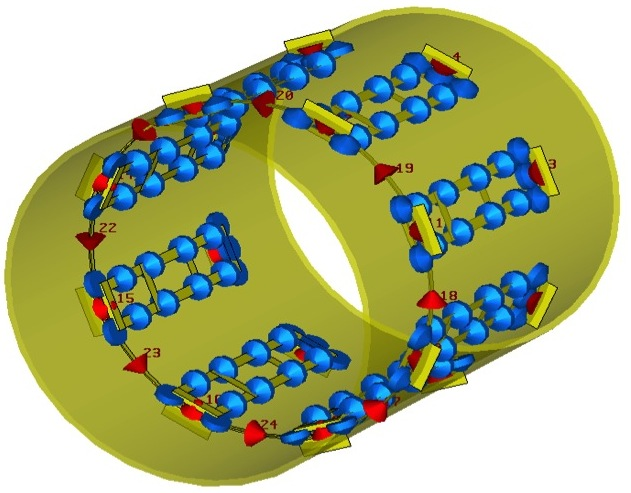
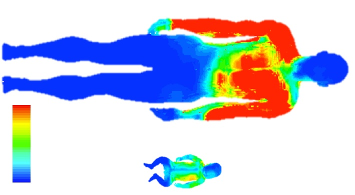

#RF simulation
Since direct measurement of electric fields is difficult, RF simulation is a key method for safety assessment in MRI.
### Contents
* [Circuit co-simulation](#circsim)
* [Neonatal SAR Assessment](#neosar)
<a name="circsim"></a>
### Circuit co-simulation

Circuit co-simulation is a method for interactively adapting EM simulations of radio-frequency devices. The basic principal is to replace lumped components by ports when running a simulation. For example a 2-port device with 10 lumped components would be simulated as a 12 port device. The advantage is that from this larger data-set, a reduced 2-port model can be deterimined by assigning any impedance to the lumped elements without running another full EM simulation. This enables the behaviour of the system with different electrical properties to be seen very quickly.
The Matlab code in this [repo](https://github.com/mriphysics/circuit-cosimulation) is for performing this combination. The methods are fully described in this [publication](http://dx.doi.org/10.1002/mrm.25504): please consider citing this in any work resulting from use of our code.
<a name="neosar"></a>
### Neonatal SAR assessment

Neonatal MRI is used increasingly on this vulnerable subject group. We studied RF absorption in neonates undergoing MR procedures and found that the energy absorbed by neonates is much less (approximately 4-fold, locally) than an adult in equivalent conditions.
Full details can be found in this open access [publication](http://onlinelibrary.wiley.com/doi/10.1002/nbm.3256/abstract).